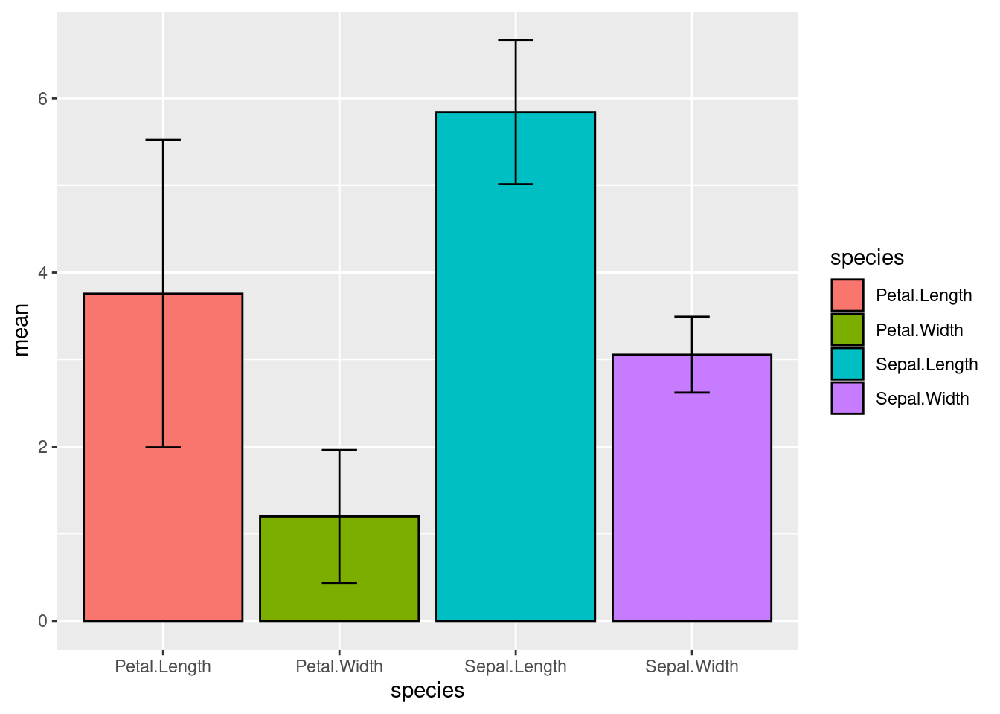
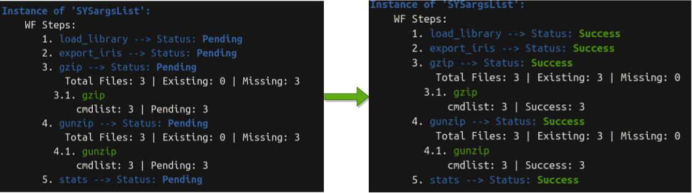

Run/manage workflows
suppressPackageStartupMessages({
library(systemPipeR)
})
Until this point, you have learned how to create a SPR workflow interactively or use a template to import/update the workflow. Next, we will learn how to run the workflow and manage the workflow.
First let’s set up the workflow using the example workflow template. For real production purposes, we recommend you to check out the complex templates over here.
For demonstration purposes here, we still use the simple workflow.
sal <- SPRproject()
## Creating directory: /home/lab/Desktop/spr/systemPipeR.github.io/content/en/sp/spr/sp_run/data
## Creating directory: /home/lab/Desktop/spr/systemPipeR.github.io/content/en/sp/spr/sp_run/param
## Creating directory: /home/lab/Desktop/spr/systemPipeR.github.io/content/en/sp/spr/sp_run/results
## Creating directory '/home/lab/Desktop/spr/systemPipeR.github.io/content/en/sp/spr/sp_run/.SPRproject'
## Creating file '/home/lab/Desktop/spr/systemPipeR.github.io/content/en/sp/spr/sp_run/.SPRproject/SYSargsList.yml'
sal <- importWF(sal, file_path = system.file("extdata", "spr_simple_wf.Rmd", package = "systemPipeR"))
## Reading Rmd file
##
## ---- Actions ----
## Checking chunk eval values
## Checking chunk SPR option
## Ignore non-SPR chunks: 17
## Parse chunk code
## Checking preprocess code for each step
## No preprocessing code for SPR steps found
## Now importing step 'load_library'
## Now importing step 'export_iris'
## Now importing step 'gzip'
## Now importing step 'gunzip'
## Now importing step 'stats'
## Now back up current Rmd file as template for `renderReport`
## Template for renderReport is stored at
## /home/lab/Desktop/spr/systemPipeR.github.io/content/en/sp/spr/sp_run/.SPRproject/workflow_template.Rmd
## Edit this file manually is not recommended
## import done
sal
## Instance of 'SYSargsList':
## WF Steps:
## 1. load_library --> Status: Pending
## 2. export_iris --> Status: Pending
## 3. gzip --> Status: Pending
## Total Files: 3 | Existing: 0 | Missing: 3
## 3.1. gzip
## cmdlist: 3 | Pending: 3
## 4. gunzip --> Status: Pending
## Total Files: 3 | Existing: 0 | Missing: 3
## 4.1. gunzip
## cmdlist: 3 | Pending: 3
## 5. stats --> Status: Pending
##
Before running
It is good to check if the command-line tools are installed before running
the workflow. To do so, we can use the tryCMD function.
tryCMD(command="R")
## [1] "All set up, proceed!"
tryCMD(command="hisat2")
## [1] "All set up, proceed!"
tryCMD(command="blastp")
## ERROR:
## blastp : COMMAND NOT FOUND.
## Please make sure to configure your PATH environment variable according to the software in use.
In examples above, installed tools will have a message "All set up, proceed!",
and not installed tool will have an error message, like the blastp example above.
If you see the error message:
-
Check if the tool is really installed, by typing the same command from a terminal. If you cannot call it even from a terminal, you need to (re)install.
-
If the tool is available in terminal but you see the error message in
tryCMD. It is mostly likely due to the path problem. Make sure you export the path. Or try to use following to set it up in R:old_path <- Sys.getenv("PATH") Sys.setenv(PATH = paste(old_path, "path/to/tool_directory", sep = ":"))
Start running
To run the workflow, call the runWF function which will execute all steps in the workflow container.
sal <- runWF(sal)
## Running Step: load_library
## Running Session: Management
##
|
| | 0%
|
|======================================================================| 100%
## Step Status: Success
## Running Step: export_iris
## Running Session: Management
##
|
| | 0%
|
|======================================================================| 100%
## Step Status: Success
## Running Step: gzip
## Running Session: Management
##
|
| | 0%
|
|======================= | 33%
|
|=============================================== | 67%
|
|======================================================================| 100%
## ---- Summary ----
## Targets Total_Files Existing_Files Missing_Files gzip
## SE SE 1 1 0 Success
## VE VE 1 1 0 Success
## VI VI 1 1 0 Success
##
## Step Status: Success
## Running Step: gunzip
## Running Session: Management
##
|
| | 0%
|
|======================= | 33%
|
|=============================================== | 67%
|
|======================================================================| 100%
## ---- Summary ----
## Targets Total_Files Existing_Files Missing_Files gunzip
## SE SE 1 1 0 Success
## VE VE 1 1 0 Success
## VI VI 1 1 0 Success
##
## Step Status: Success
## Running Step: stats
## Running Session: Management

##
|
| | 0%
|
|======================================================================| 100%
## Step Status: Success
## Done with workflow running, now consider rendering logs & reports
## To render logs, run: sal <- renderLogs(sal)
## From command-line: Rscript -e "sal = systemPipeR::SPRproject(resume = TRUE); sal = systemPipeR::renderLogs(sal)"
## To render reports, run: sal <- renderReport(sal)
## From command-line: Rscript -e "sal= s ystemPipeR::SPRproject(resume = TRUE); sal = systemPipeR::renderReport(sal)"
## This message is displayed once per R session
sal
## Instance of 'SYSargsList':
## WF Steps:
## 1. load_library --> Status: Success
## 2. export_iris --> Status: Success
## 3. gzip --> Status: Success
## Total Files: 3 | Existing: 3 | Missing: 0
## 3.1. gzip
## cmdlist: 3 | Success: 3
## 4. gunzip --> Status: Success
## Total Files: 3 | Existing: 3 | Missing: 0
## 4.1. gunzip
## cmdlist: 3 | Success: 3
## 5. stats --> Status: Success
##

We can see the workflow status changed from pending to Success
Run selected steps
This function allows the user to choose one or multiple steps to be
executed using the steps argument. However, it is necessary to follow the
workflow dependency graph. If a selected step depends on a previous step(s) that
was not executed, the execution will fail.
sal <- runWF(sal, steps = c(1,3))
## Running Step: load_library
## Running Session: Management
##
|
| | 0%
|
|======================================================================| 100%
## Step Status: Success
## Skipping Step: export_iris
## Running Step: gzip
## Running Session: Management
##
|
| | 0%
|
|======================= | 33%
|
|=============================================== | 67%
|
|======================================================================| 100%
## ---- Summary ----
## Targets Total_Files Existing_Files Missing_Files gzip
## SE SE 1 1 0 Success
## VE VE 1 1 0 Success
## VI VI 1 1 0 Success
##
## Step Status: Success
## Skipping Step: gunzip
## Skipping Step: stats
We do not see any problem here because we have finished the entire workflow running previously. So all depedency satisfies. Let’s clean the workflow and start from scratch to see what will happen if one or more depedency is not met and we are trying to run some selected steps.
sal <- SPRproject(overwrite = TRUE)
## Recreating directory '/home/lab/Desktop/spr/systemPipeR.github.io/content/en/sp/spr/sp_run/.SPRproject'
## Creating file '/home/lab/Desktop/spr/systemPipeR.github.io/content/en/sp/spr/sp_run/.SPRproject/SYSargsList.yml'
sal <- importWF(sal, file_path = system.file("extdata", "spr_simple_wf.Rmd", package = "systemPipeR"))
## Reading Rmd file
##
## ---- Actions ----
## Checking chunk eval values
## Checking chunk SPR option
## Ignore non-SPR chunks: 17
## Parse chunk code
## Checking preprocess code for each step
## No preprocessing code for SPR steps found
## Now importing step 'load_library'
## Now importing step 'export_iris'
## Now importing step 'gzip'
## Now importing step 'gunzip'
## Now importing step 'stats'
## Now back up current Rmd file as template for `renderReport`
## Template for renderReport is stored at
## /home/lab/Desktop/spr/systemPipeR.github.io/content/en/sp/spr/sp_run/.SPRproject/workflow_template.Rmd
## Edit this file manually is not recommended
## import done
sal
## Instance of 'SYSargsList':
## WF Steps:
## 1. load_library --> Status: Pending
## 2. export_iris --> Status: Pending
## 3. gzip --> Status: Pending
## Total Files: 3 | Existing: 0 | Missing: 3
## 3.1. gzip
## cmdlist: 3 | Pending: 3
## 4. gunzip --> Status: Pending
## Total Files: 3 | Existing: 0 | Missing: 3
## 4.1. gunzip
## cmdlist: 3 | Pending: 3
## 5. stats --> Status: Pending
##
sal <- runWF(sal, steps = c(1,3))
## Running Step: load_library
## Running Session: Management
##
|
| | 0%
|
|======================================================================| 100%
## Step Status: Success
## Skipping Step: export_iris
## Previous steps:
## export_iris
## have been not executed yet.
We can see the workflow step 3 is not run because of the dependency problem: > ## export_iris > ## have been not executed yet.
optional steps
By default all steps are 'mandatory', but you can change it to 'optional'
SYSargsList(..., run_step = 'optional')
# or
LineWise(..., run_step = 'optional')
When workflow is run by runWF, default will run all steps 'ALL', but you can
choose to only run mandatory steps 'mandatory' or optional steps 'optional'.
# default
sal <- runWF(sal, run_step = "ALL")
# only mandatory
sal <- runWF(sal, run_step = "mandatory")
# only optional
sal <- runWF(sal, run_step = "optional")
Force to run steps
-
Forcing the execution of the steps, even if the status of the step is
'Success'and all the expectedoutfilesexists.sal <- runWF(sal, force = TRUE, ... = ) -
Another feature of the
runWFfunction is ignoring all the warnings and errors and running the workflow by the argumentswarning.stopanderror.stop, respectively.sal <- runWF(sal, warning.stop = FALSE, error.stop = TRUE, ...) -
To force the step to run without checking the dependency, we can use
ignore.dep = TRUE. For example, let’s run the step 3 that could not be run because of dependency problem.sal <- runWF(sal, steps = 3, ignore.dep = TRUE)## Skipping Step: load_library ## Skipping Step: export_iris ## Running Step: gzip ## Running Session: Management ## | | | 0% | |======================= | 33% | |=============================================== | 67% | |======================================================================| 100% ## ---- Summary ---- ## Targets Total_Files Existing_Files Missing_Files gzip ## SE SE 1 0 1 Error ## VE VE 1 0 1 Error ## VI VI 1 0 1 Error ## Error in runWF(sal, steps = 3, ignore.dep = TRUE): Caught an error, stop workflow!We can see the workflow failed, because required files from step 2 are missing and we jumped directly to step 3. Therefore, skip dependency is possible in SPR but not recommended.
Workflow envirnment
When the project was initialized by SPRproject function, it was created an
environment for all object to store during the workflow preprocess code execution or
Linewise R code execution. This environment can be accessed as follows:
viewEnvir(sal)
## <environment: 0x557918f5c620>
## [1] "df" "plot" "stats"
We can see there are "df", "plot", "stats" 3 objects, and they are created
during the step 5 Linewise code execution. To access these variables
interactive from your global environment, use copyEnvir method.
copyEnvir(sal, c("df", "plot"))
## <environment: 0x557918f5c620>
## Copying to 'new.env':
## df, plot
exists("df", envir = globalenv())
## [1] TRUE
exists("plot", envir = globalenv())
## [1] TRUE
Now we see, they are in our global enviornment, and we are free to do other operations on them.
Save envirnment
The workflow execution allows to save this environment for future recovery:
sal <- runWF(sal, saveEnv = TRUE)
Depending on what variable you have saved in the enviorment, it can become expensive (take much space and slow to load back in resume).
Parallelization on clusters
This section of the tutorial provides an introduction to the usage of the
systemPipeR features on a cluster.
So far, all workflow steps are run in the same computer as we manage the workflow
instance. This is called running in the management session.
Alternatively, the computation can be greatly accelerated by processing many files
in parallel using several compute nodes of a cluster, where a scheduling/queuing
system is used for load balancing. This is called running in the compute session.
The behavior controlled by the run_session argument in SYSargsList.
SYSargsList(..., run_session = "management")
# or
SYSargsList(..., run_session = "compute")
By default, all steps are run on "management", and we can change it to use
"compute". However, simply change the value will not work, we also couple with
computing resources (see below for what is ‘resources’). The resources need to
be appended to the step by run_remote_resources argument.
SYSargsList(..., run_session = "compute", run_remote_resources = list(...))
This is how to config the running session for each step, but generally we can
use a more convenient method addResources to add resources (continue reading below).
Resources
Resources here refer to computer resources, like CPU, RAM, time limit, etc.
The resources list object provides the number of independent parallel cluster
processes defined under the Njobs element in the list. The following example
will run 18 processes in parallel using each 4 CPU cores on a slurm scheduler.
If the resources available on a cluster allow running all 18 processes at the
same time, then the shown sample submission will utilize in a total of 72 CPU cores.
Note, runWF can be used with most queueing systems as it is based on utilities
from the batchtools package, which supports the use of template files (*.tmpl)
for defining the run parameters of different schedulers. To run the following
code, one needs to have both a conffile (see .batchtools.conf.R samples here)
and a template file (see *.tmpl samples here)
for the queueing available on a system. The following example uses the sample
conffile and template files for the Slurm scheduler provided by this package.
The resources can be appended when the step is generated, or it is possible to
add these resources later, as the following example using the addResources
function:
Before adding resources
runInfo(sal)[['runOption']][['gzip']]
## $directory
## [1] TRUE
##
## $run_step
## [1] "mandatory"
##
## $run_session
## [1] "management"
##
## $rmd_line
## [1] "52:60"
##
## $prepro_lines
## [1] ""
resources <- list(conffile=".batchtools.conf.R",
template="batchtools.slurm.tmpl",
Njobs=18,
walltime=120,##minutes
ntasks=1,
ncpus=4,
memory=1024,##Mb
partition = "short"# a compute node called 'short'
)
sal <- addResources(sal, c("gzip"), resources = resources)
## Please note that the 'gzip' step option 'management' was replaced with 'compute'.
After adding resources
runInfo(sal)[['runOption']][['gzip']]
## $directory
## [1] TRUE
##
## $run_step
## [1] "mandatory"
##
## $run_session
## [1] "compute"
##
## $rmd_line
## [1] "52:60"
##
## $prepro_lines
## [1] ""
##
## $run_remote_resources
## $run_remote_resources$conffile
## [1] ".batchtools.conf.R"
##
## $run_remote_resources$template
## [1] "batchtools.slurm.tmpl"
##
## $run_remote_resources$Njobs
## [1] 18
##
## $run_remote_resources$walltime
## [1] 120
##
## $run_remote_resources$ntasks
## [1] 1
##
## $run_remote_resources$ncpus
## [1] 4
##
## $run_remote_resources$memory
## [1] 1024
##
## $run_remote_resources$partition
## [1] "short"
You can see the step option is automatically replaced from ‘management’ to ‘compute’.
Workflow status
To check the summary of the workflow, we can use:
sal
## Instance of 'SYSargsList':
## WF Steps:
## 1. load_library --> Status: Success
## 2. export_iris --> Status: Success
## 3. gzip --> Status: Success
## Total Files: 3 | Existing: 3 | Missing: 0
## 3.1. gzip
## cmdlist: 3 | Success: 3
## 4. gunzip --> Status: Success
## Total Files: 3 | Existing: 3 | Missing: 0
## 4.1. gunzip
## cmdlist: 3 | Success: 3
## 5. stats --> Status: Success
##
To access more details about the workflow instances, we can use the statusWF method:
statusWF(sal)
## $load_library
## DataFrame with 1 row and 2 columns
## Step Status
## <character> <character>
## 1 load_library Success
##
## $export_iris
## DataFrame with 1 row and 2 columns
## Step Status
## <character> <character>
## 1 export_iris Success
##
## $gzip
## DataFrame with 3 rows and 5 columns
## Targets Total_Files Existing_Files Missing_Files gzip
## <character> <numeric> <numeric> <numeric> <matrix>
## SE SE 1 1 0 Success
## VE VE 1 1 0 Success
## VI VI 1 1 0 Success
##
## $gunzip
## DataFrame with 3 rows and 5 columns
## Targets Total_Files Existing_Files Missing_Files gunzip
## <character> <numeric> <numeric> <numeric> <matrix>
## SE SE 1 1 0 Success
## VE VE 1 1 0 Success
## VI VI 1 1 0 Success
##
## $stats
## DataFrame with 1 row and 2 columns
## Step Status
## <character> <character>
## 1 stats Success
To access the options of each workflow step, for example, whether it is mandatory step
or optional step, where it stored in the template, where to run the step, etc.,
we can use the runInfo function to check.
runInfo(sal)
## $env
## <environment: 0x557918f5c620>
##
## $runOption
## $runOption$load_library
## $runOption$load_library$directory
## [1] FALSE
##
## $runOption$load_library$run_step
## [1] "mandatory"
##
## $runOption$load_library$run_session
## [1] "management"
##
## $runOption$load_library$run_remote_resources
## NULL
##
## $runOption$load_library$rmd_line
## [1] "25:31"
##
## $runOption$load_library$prepro_lines
## [1] ""
##
##
## $runOption$export_iris
## $runOption$export_iris$directory
## [1] FALSE
##
## $runOption$export_iris$run_step
## [1] "mandatory"
##
## $runOption$export_iris$run_session
## [1] "management"
##
## $runOption$export_iris$run_remote_resources
## NULL
##
## $runOption$export_iris$rmd_line
## [1] "37:46"
##
## $runOption$export_iris$prepro_lines
## [1] ""
##
##
## $runOption$gzip
## $runOption$gzip$directory
## [1] TRUE
##
## $runOption$gzip$run_step
## [1] "mandatory"
##
## $runOption$gzip$run_session
## [1] "compute"
##
## $runOption$gzip$rmd_line
## [1] "52:60"
##
## $runOption$gzip$prepro_lines
## [1] ""
##
## $runOption$gzip$run_remote_resources
## $runOption$gzip$run_remote_resources$conffile
## [1] ".batchtools.conf.R"
##
## $runOption$gzip$run_remote_resources$template
## [1] "batchtools.slurm.tmpl"
##
## $runOption$gzip$run_remote_resources$Njobs
## [1] 18
##
## $runOption$gzip$run_remote_resources$walltime
## [1] 120
##
## $runOption$gzip$run_remote_resources$ntasks
## [1] 1
##
## $runOption$gzip$run_remote_resources$ncpus
## [1] 4
##
## $runOption$gzip$run_remote_resources$memory
## [1] 1024
##
## $runOption$gzip$run_remote_resources$partition
## [1] "short"
##
##
##
## $runOption$gunzip
## $runOption$gunzip$directory
## [1] TRUE
##
## $runOption$gunzip$run_step
## [1] "mandatory"
##
## $runOption$gunzip$run_session
## [1] "management"
##
## $runOption$gunzip$rmd_line
## [1] "64:72"
##
## $runOption$gunzip$prepro_lines
## [1] ""
##
##
## $runOption$stats
## $runOption$stats$directory
## [1] FALSE
##
## $runOption$stats$run_step
## [1] "optional"
##
## $runOption$stats$run_session
## [1] "management"
##
## $runOption$stats$run_remote_resources
## NULL
##
## $runOption$stats$rmd_line
## [1] "76:92"
##
## $runOption$stats$prepro_lines
## [1] ""
Visualize workflow
systemPipeR workflows instances can be visualized with the plotWF function.
This function will make a plot of selected workflow instance and the following information is displayed on the plot:
- Workflow structure (dependency graphs between different steps);
- Workflow step status, *e.g.* `Success`, `Error`, `Pending`, `Warnings`;
- Sample status and statistics;
- Workflow timing: running duration time.
If no argument is provided, the basic plot will automatically detect width, height, layout, plot method, branches, etc.
plotWF(sal, width = "80%", rstudio = TRUE)
We will discuss a lot more advanced use of plotWF function in the next section.
High-level project control
If you desire to resume or restart a project that has been initialized in the past,
SPRproject function allows this operation.
Resume
With the resume option, it is possible to load the SYSargsList object in R and
resume the analysis. Please, make sure to provide the logs.dir location, and the
corresponded YAML file name, if the default names were not used when the project was created.
sal <- SPRproject(resume = TRUE, logs.dir = ".SPRproject",
sys.file = ".SPRproject/SYSargsList.yml")
If you choose to save the environment in the last analysis, you can recover all
the files created in that particular section. SPRproject function allows this
with load.envir argument. Please note that the environment was saved only with
you run the workflow in the last section (runWF()).
sal <- SPRproject(resume = TRUE, load.envir = TRUE)
Restart
The resume option will keep all previous logs in the folder; however, if you desire to
clean the execution (delete all the log files) history and restart the workflow,
the restart=TRUE option can be used.
sal <- SPRproject(restart = TRUE, load.envir = FALSE)
Overwrite
The last and more drastic option from SYSproject function is to overwrite the
logs and the SYSargsList object. This option will delete the hidden folder and the
information on the SYSargsList.yml file. This will not delete any parameter
file nor any results it was created in previous runs. Please use with caution.
sal <- SPRproject(overwrite = TRUE)
Session
sessionInfo()
## R version 4.2.0 (2022-04-22)
## Platform: x86_64-pc-linux-gnu (64-bit)
## Running under: Ubuntu 20.04.4 LTS
##
## Matrix products: default
## BLAS: /usr/lib/x86_64-linux-gnu/blas/libblas.so.3.9.0
## LAPACK: /usr/lib/x86_64-linux-gnu/lapack/liblapack.so.3.9.0
##
## locale:
## [1] LC_CTYPE=en_US.UTF-8 LC_NUMERIC=C
## [3] LC_TIME=en_US.UTF-8 LC_COLLATE=en_US.UTF-8
## [5] LC_MONETARY=en_US.UTF-8 LC_MESSAGES=en_US.UTF-8
## [7] LC_PAPER=en_US.UTF-8 LC_NAME=C
## [9] LC_ADDRESS=C LC_TELEPHONE=C
## [11] LC_MEASUREMENT=en_US.UTF-8 LC_IDENTIFICATION=C
##
## attached base packages:
## [1] stats4 stats graphics grDevices utils datasets methods
## [8] base
##
## other attached packages:
## [1] systemPipeR_2.3.4 ShortRead_1.54.0
## [3] GenomicAlignments_1.32.0 SummarizedExperiment_1.26.1
## [5] Biobase_2.56.0 MatrixGenerics_1.8.0
## [7] matrixStats_0.62.0 BiocParallel_1.30.2
## [9] Rsamtools_2.12.0 Biostrings_2.64.0
## [11] XVector_0.36.0 GenomicRanges_1.48.0
## [13] GenomeInfoDb_1.32.2 IRanges_2.30.0
## [15] S4Vectors_0.34.0 BiocGenerics_0.42.0
##
## loaded via a namespace (and not attached):
## [1] lattice_0.20-45 png_0.1-7 assertthat_0.2.1
## [4] digest_0.6.29 utf8_1.2.2 R6_2.5.1
## [7] evaluate_0.15 highr_0.9 ggplot2_3.3.6
## [10] blogdown_1.10 pillar_1.7.0 zlibbioc_1.42.0
## [13] rlang_1.0.2 rstudioapi_0.13 jquerylib_0.1.4
## [16] Matrix_1.4-1 rmarkdown_2.14 labeling_0.4.2
## [19] stringr_1.4.0 htmlwidgets_1.5.4 RCurl_1.98-1.6
## [22] munsell_0.5.0 DelayedArray_0.22.0 compiler_4.2.0
## [25] xfun_0.31 pkgconfig_2.0.3 htmltools_0.5.2
## [28] tidyselect_1.1.2 tibble_3.1.7 GenomeInfoDbData_1.2.8
## [31] bookdown_0.26 fansi_1.0.3 dplyr_1.0.9
## [34] crayon_1.5.1 bitops_1.0-7 grid_4.2.0
## [37] DBI_1.1.2 jsonlite_1.8.0 gtable_0.3.0
## [40] lifecycle_1.0.1 magrittr_2.0.3 scales_1.2.0
## [43] cli_3.3.0 stringi_1.7.6 farver_2.1.0
## [46] hwriter_1.3.2.1 latticeExtra_0.6-29 bslib_0.3.1
## [49] generics_0.1.2 ellipsis_0.3.2 vctrs_0.4.1
## [52] RColorBrewer_1.1-3 tools_4.2.0 glue_1.6.2
## [55] purrr_0.3.4 jpeg_0.1-9 parallel_4.2.0
## [58] fastmap_1.1.0 yaml_2.3.5 colorspace_2.0-3
## [61] knitr_1.39 sass_0.4.1